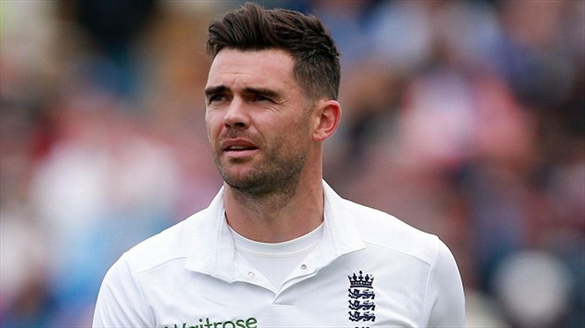
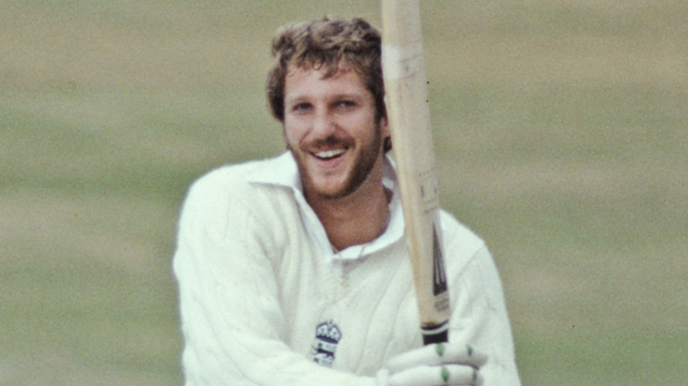
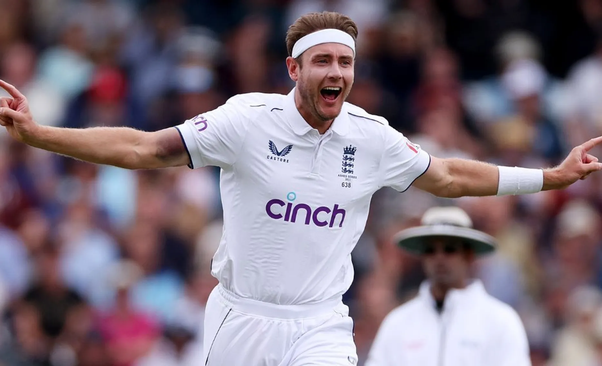
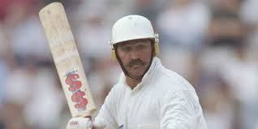
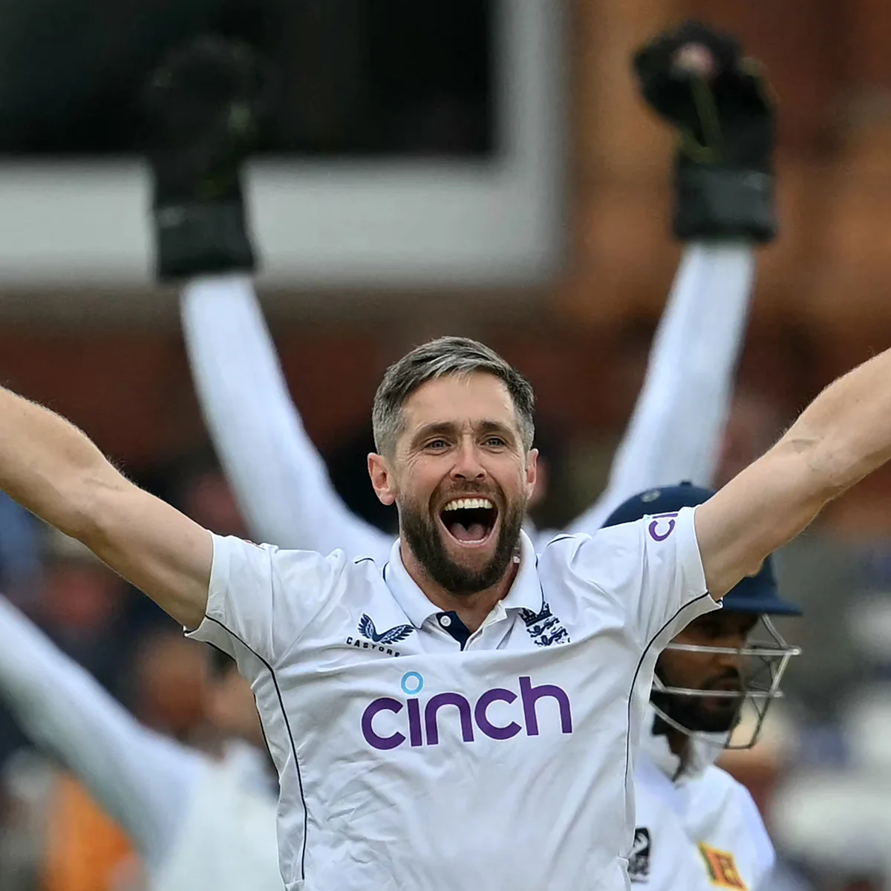
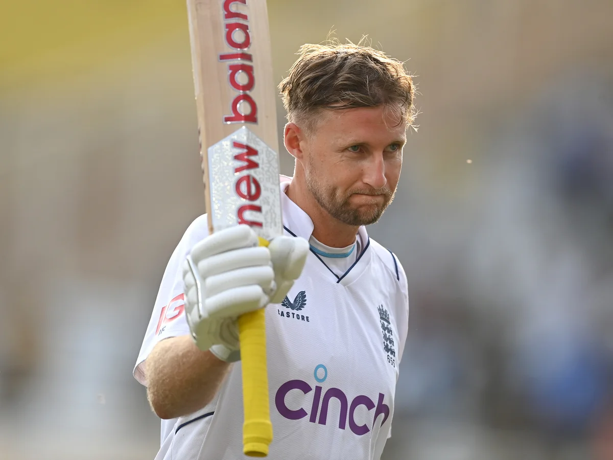
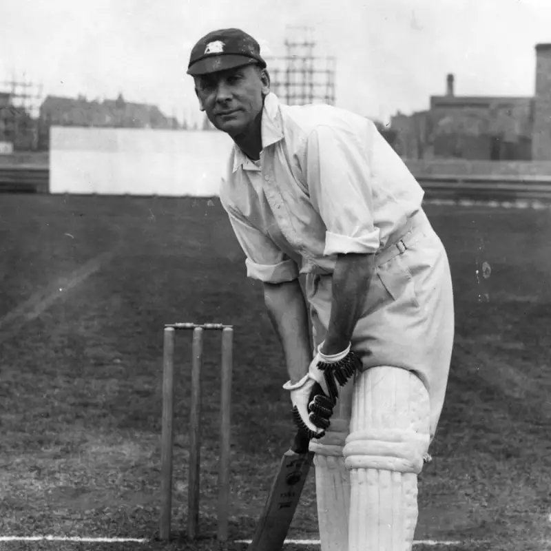

Click on the ICC below to go back to the Homepage

History |
before 1970s and the 70s |
Venues |
1. Lord's Cricket Ground Location: London Capacity: 31,000 Known as the "Home of Cricket," it hosts Test matches, ODIs, and domestic games. 2. The Oval Location: London Capacity: 27,500 Famous for hosting the final Test of the English summer, home to Surrey County Cricket Club. 3. Old Trafford Location: Manchester Capacity: 26,000 4. Edgbaston Location: Birmingham Capacity: 25,000 Known for its electric atmosphere, home to Warwickshire County Cricket Club. 5. Headingley Location: Leeds Capacity: 18,350 Famous for its passionate crowd, home to Yorkshire County Cricket Club. Home to Lancashire County Cricket Club, known for its rich history and Ashes Tests. |
World records |
1. Highest Team Total in ODIs
Score: 498/4
Against: Netherlands
Date: June 17, 2022
2. Most Test Wickets |
What place did they get in every world cup(odi) |
1975: Semi-finals 1979: Runners-up 1983: Semi-finals 1987: Runners-up 1992: Runners-up 1996: Quarter-finals 1999: Group Stage 2003: Group Stage 2007: Super 8s 2011: Quarter-finals 2015: Group Stage 2019: Winners 2023: Semi-finals |

James Anderson, born in 1982, is England's leading wicket-taker in Tests with 704 wickets. Known for his mastery of swing bowling, he played a key role in multiple Ashes victories. Anderson became the first fast bowler to take 600 and then 700 Test wickets

ian bothamIan Botham, born in 1955, is one of England's greatest all-rounders, known for his aggressive batting and effective swing bowling. He took 383 Test wickets and scored 5,200 runs, including 14 centuries

Stuart BroadStuart Broad, born on June 24, 1986, is one of England's greatest fast bowlers. He has taken over 600 Test wickets, making him the second-highest wicket-taker for England in Tests12. Broad is known for his ability to produce match-winning spells, with his 8/15 against Australia in the 2015 Ashes being one of his most memorable performance Mark Wood, born on January 11, 1990, is an English fast bowler known for his express pace and bounce. He debuted in 2015 and played a key role in England's 2019 Cricket World Cup and 2022 T20 World Cup wins
 mark wood
mark wood

Graham ThorpeGraham Thorpe, born on August 1, 1969, was a distinguished English cricketer known for his skillful left-handed batting. He played 100 Test matches and 82 ODIs for England, scoring 6,744 Test runs and 2,380 ODI run

Chris w-resizeoakesChris Woakes, born on March 2, 1989, is an English all-rounder known for his right-arm fast-medium bowling and right-handed batting12. He made his international debut in 2011 and has been a key player for England in all formats1. Woakes played crucial roles in England's 2019 Cricket World Cup and 2022 T20 World Cup victories1. He has taken over 170 wickets in both ODIs and Tests, and his highest Test score is 137 not out.

joe rootJoe Root, born on December 30, 1990, is one of England's greatest batsmen. He made his Test debut in 2012 and has since become England's highest run-scorer in Tests, with over 12,000 runs12. Root captained the England Test team from 2017 to 2022, leading them to notable victories1. He was a key player in England's 2019 Cricket World Cup win and has been named ICC Men's Test Cricketer of the Year and Wisden Leading Cricketer in the World

Sir Jack HobbsSir Jack Hobbs, born on December 16, 1882, is widely regarded as one of the greatest batsmen in cricket history. Known as "The Master," he played for Surrey from 1905 to 1934 and represented England in 61 Test matches between 1908 and 193012. Hobbs holds the record for the most runs (61,760) and centuries (199) in first-class cricket